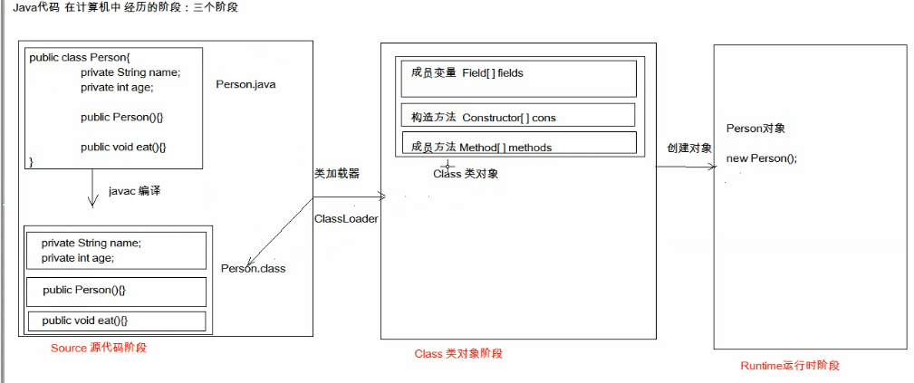
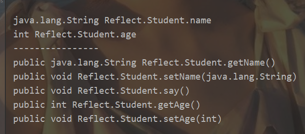
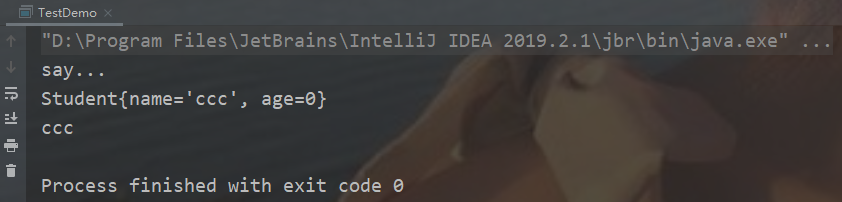

介绍了java中的反射机制，并且通过一个具体的例子进行说明其实现原理。主要的作用即获取属性、获取构造方法、获取方法、构建对象。
Java反射机制
主要就是通过类名来进行构建具体的对象，正常的效果是使用new对象来进行对象的构建，spring也就是利用这个机制来实现动态代理。以下例子就是说明，forname表示类名。
1 | object =(ReflectServiceimpl2)Class.forName( ”com.lean.ssm.chapter2.reflect.ReflectServiceimpl”).getConstructor(String.class}.newinstance（”张三”）; |
反射：框架设计的灵魂。
框架： 也就是半成品软件。利用反射可以将java中开发出来的半成品跑起来。
- 好处：
- 可以在程序运行过程中，操作这些对象，比如说ide中的提示变量方法的功能就是运用java的反射机制
- 可以解耦程序，提高程序的可扩展性。
以下是java代码在计算机中经历的三个阶段：

另外，反射是实现框架的机制，但并不是spring的核心思想，spring的思想是解决bean之间的耦合关系。
为什么需要反射？
主要是因为在进行反射的时候，可以不需要知道用户自定义实现的对象内部的细节，即不管你怎么变，我都可以通过反射的机制知道，并且获取到用户自定类中的所有东西，这样就对于扩展性就很好。
另外，在进行反射的时候，也是需要进行构建用户的对象，然后根据用户定义的包名去找到用户需要制定的东西，也就是，我给你提供好框架，你自己去填就行。所以可以实现通过配置来进行各种操作。
而且java中对象与方法其实是一致的，所以可以是一样的进行操作。
即 通过反射来实现对象与类之间的关联。
1 | <bean id = "userService" class = "cn.proposeme.UserService"></bean> |
1 | public static UserService getService(){ |
反射一个重要的思想
即：通过程序自动的获取到用户自定义出来的方法，即程序可以知道用户都写了什么东西，定义了什么方法， 这样jvm虚拟机才能进行对应的相关操作，并且允许用户通过指定的方式让程序做具体的工作。
类比于框架，其实框架相当于jvm的加强版，即也需要用户改了什么东西，然后框架去做具体的事。
在获取到类的方法并进行调用的时候，需要传一个类的对象， 所以就需要先通过反射获取到一个对象，将其传参传进去，然后就可以实现需要调用的方法。
这样就是说，反射并不是什么都不知道去进行操作对象，还是需要用户进行一定的配置，比如说类名或者是方法名之类的东西。即需要用户进行手动的指定去操作，系统是可以获取所有的东西，但是需要用户去指定。反映到框架就是配置的操作。
使用反射的步骤
对于反射来说，总共分为两部分，
- 获取对象
- 操作对象方法、属性、构造器
1.获取class对象
获取class对象的方式：（核心是获取对象） 字节码对象获取的是。
- Class.forName(“全类名”):将自己吗加载进内存，返回class对象，（也就是意味着这里已经相当于new功能，出现了新的对象）
- 多用于配置文件的实现方式，将类名定义在配置文件中，读取文件，加载类。
- 类名.class :通过类名的属性class获取。
- 多用于参数的传递
- 对象.getClass():getClass()方法在object类中定义着。
- 多用于对象的获取字节码的方式
以上，通过获取字节的方式进行class获取，被获取到的对象不仅可以操作其中public 属性，也可以操作其中的私有属性的方法。
另外：同一个字节码文件(*.class)在第一次程序运行过程中，只会被加载一次，不论是通过哪一种范式获取得到的。
对于获取到的字节码对象，我们可以干的事，即通过class对象我们可以反过来获取到加载过来的对象。
2.使用class对象中的方法
- Class对象功能
- 获取成员变量们
- File[] getFields() 获取所有的属性
- File[] getField(String name) 通过属性名来获取具体的属性
- File[] getDeclaredFields()
- File[] getDeclaredField(String name)
- 获得构造方法们
- Constructor<?>[] getConstructors()
- Constructor
[] getConstructor(类<?>… parametterTypes) - Constructor
[] getDeclaredConstructors() - Constructor
[] getDeclaredConstructor(类<?>… parametterTypes)
- 获得成员方法们
- Method[] getMethods()
- Method getMethod(String name, 类<?>… parametterTypes)
- Method[] getDeclaredMethods()
- Method[] getDeclaredMethod(String name, 类<?>… parametterTypes)
- 获取类名
- String getName()
- 获取成员变量们
其中Declared与不带Declared的区别：
使用带declared的方法可以获取到class中所有权限的属性和方法，不带的话只能获取到public修饰的属性和方法。
在使用Declared的时候需要设置一个setAccessible(true) 的属性(file 对象方法)。
通过反射进行操作对象的一个例子
总共有两个类1
2
3
4
5
6
7
8
9
10
11
12
13
14
15
16
17
18
19
20
21
22
23
24
25
26
27
28
29
30
31
32
33
34
35
36
37
38
39
40
41
42
43
44
45
46
47
48
49
50
51
52
53
54
ps:代码参考为b站视频，[Java反射]( https://www.bilibili.com/video/av56351262/?p=1 )
```java
Student.java
package Reflect;
/**
* @author Seven
* @description 学生类，进行测试反射
* @create 2019-10-16 21:21
**/
public class Student {
public String getName() {
return name;
}
public void setName(String name) {
this.name = name;
}
public int getAge() {
return age;
}
public void setAge(int age) {
this.age = age;
}
String name = null;
int age;
public Student(String name, int age) {
this.name = name;
this.age = age;
}
public Student() {
}
public void say(){
System.out.println("say...");
}
@Override
public String toString() {
return "Student{" +
"name='" + name + '\'' +
", age=" + age +
'}';
}
}
1 | TestDemo.java类。 |
其中运行reflectTest的结果如下：

运行main的结果如下:
